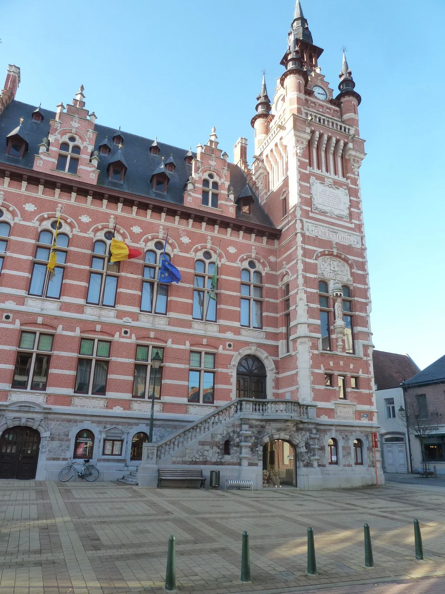
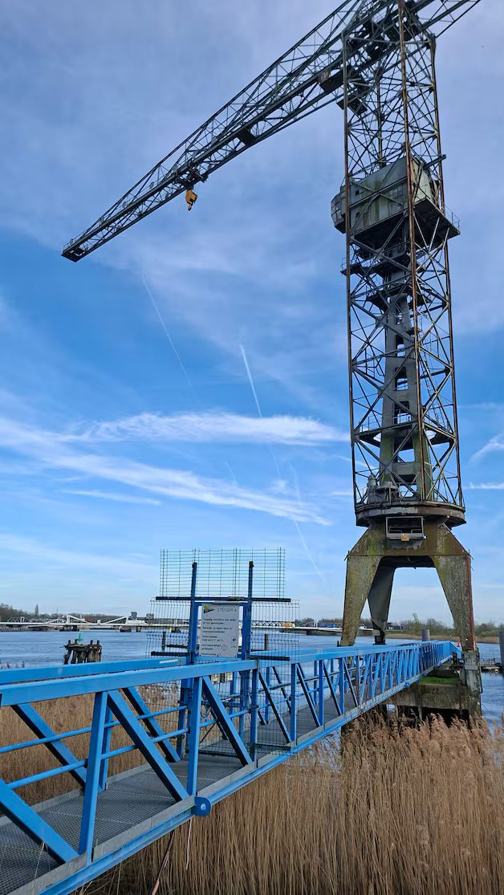
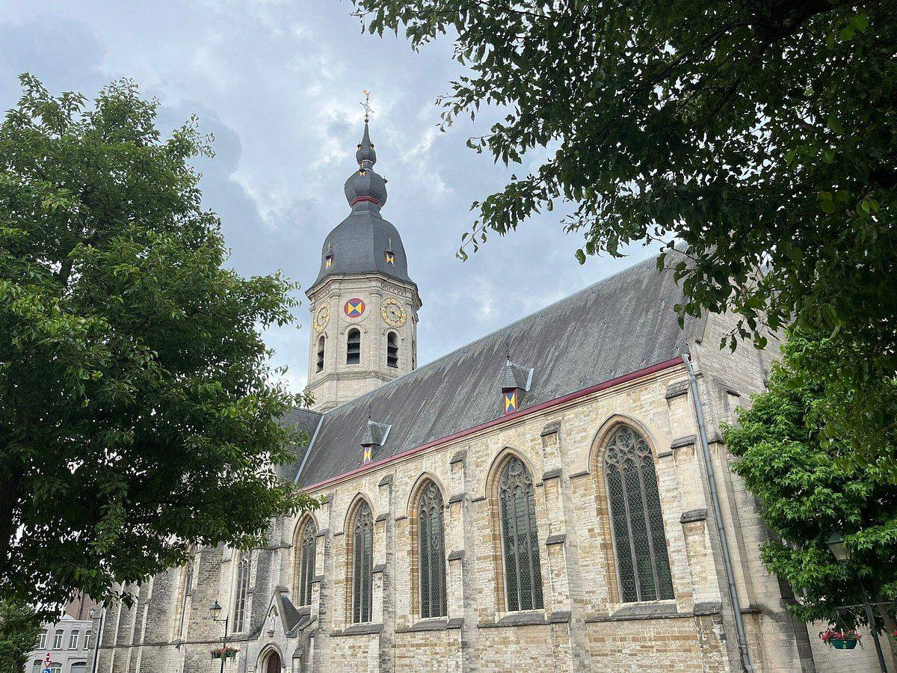
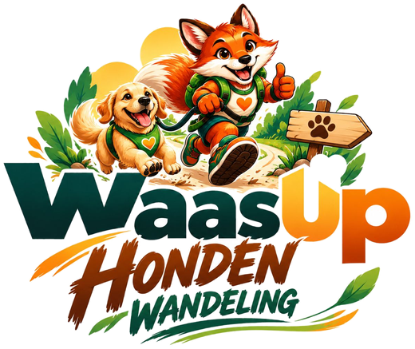

Activiteiten
De Hondenwandeling op 25 april is de eerste. Wat volgt, verklappen we binnenkort.
Bekijk de kalender →


MENSEN | IDEEËN | TEMSE
WaasUp brengt de inwoners van Temse, Steendorp, Tielrode, Elversele en Velle samen, met activiteiten die je zelf mee vorm geeft.
Dit doen we voor elkaar!

Waarom WaasUp
WaasUp is een onafhankelijke vzw, opgericht door vier inwoners van Temse. We organiseren activiteiten met en voor de Temsenaar, brengen mensen samen en luisteren naar wat er leeft in de straten van Groot-Temse.
Wat we horen, nemen we mee: met voorstellen voor bewoners, verenigingen en het bestuur. Onafhankelijk, met één doel: een warmer Temse.
Lees meer over WaasUp →Doe mee
De Hondenwandeling op 25 april is de eerste. Wat volgt, verklappen we binnenkort.
Bekijk de kalender →Onderneem je in Temse of werken er Temsenaren bij jou? Bouw mee aan je eigen gemeente.
Word partner →Hoor als eerste wanneer een activiteit live gaat en schrijf je met één klik in.
Word lid →Een paar uur op de dag zelf, aan het onthaal of op het parcours. Jij kiest wanneer.
Help mee →Eerstvolgende activiteit
Zondag 25 april 2027 · vanaf 10 uur · Scouts Steendorp
Onze derde editie: een wandeling voor baas en hond, samen met de Scouts van Steendorp. We vertrekken op zondag 25 april vanaf 10 uur bij de Scouts in Steendorp.

Jouw Straat in Kaart
Straat per straat vragen we de bewoners hoe het is om er te wonen. Doet minstens een kwart van de huizen mee, dan kleurt je straat op de kaart van Groot-Temse.
Hoe veilig voel je je, overdag en ’s avonds?
Fietsen, stappen, parkeren en het verkeer in je straat.
Netheid, groen, voetpaden en vuilbakken.
Buren, jeugd, verenigingen en ontmoeting.
Activiteiten 2027
Onze derde editie: een wandeling voor baas en hond, samen met de Scouts van Steendorp.
Binnenkort meer. Word lid en hoor het als eerste.
Binnenkort meer. Word lid en hoor het als eerste.
Binnenkort meer. Word lid en hoor het als eerste.
Partners
We zoeken partners die hier ondernemen of Temsenaren aan het werk houden. Met jullie steun worden onze activiteiten mogelijk, en sta je zichtbaar naast de mensen voor wie je het doet.
In beeld
Foto’s van onze activiteiten verschijnen hier zodra ze er zijn. Jij kan ook foto’s insturen; we bekijken ze eerst.